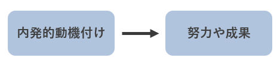

About Us
- 1.組織行動論とは
- 2.モチベーションの構造
- 3.リーダーシップの行動論
1.組織行動論とは
組織行動論(英語でOrganaizational Behavior)とは組織における人間行動に関する理論を指します。
取り扱うのは組織の中で活動する個人あるいは集団です。
こうした組織の中の人間行動を理解しようとするのが、
組織行動論の目指すところです。
01.組織行動論の特徴
組織行動論の考え方の特徴は、因果を考えるところにあります。
重要な点は関係あるなしを単に理解しようとするのではなく、
なぜ因果関係があるのか(ないのか)についても考えるということです。
マネージャーのある行動が組織で働く人の働く意欲へ及ぼす影響を考える。
→それが組織の成果にどうつながるのか
02.組織行動論を学ぶ意義
組織行動論を学ぶことの何よりの意義は、実際に使うことによる意義です。
実践することによって、よりうまく組織をマネジメントすることができます。
予測としての意義
実際的な示唆を得たりアクションを起こしたりするうえでの助けになるということです。
組織行動論を理解することによって、より成果につながる組織の中の個人の行動を引き出すことができます。
説明としての意義
結果の善し悪しにかかわらず、いったいなぜそうなったのかということを考え、
説明することは、次のアクションにとって重要になります。
2.モチベーションの構造
なぜ一生懸命働こうとするのかといった頑張りや働く意欲を、
モチベーションという言葉で表現しています。
方向性…目標のように心理的エネルギーが向かう先を示します。
持続性…モチベーションが発揮される長さを示します。
強度…心理的エネルギーの強さを示します。
01.報酬と動機づけ
内発的動機付け
人々がやっていることそのものに動機づけられていること。

外的な報酬は内発的な動機を減じる
外的報酬の効果
①人々を動機づけ、コントロールするという機能
②提供されることによって、その人が有能であるということを伝達する機能
3.リーダーシップの行動論
リーダーシップとは「集団に目標達成を促すよう影響を与える能力」を指します。
01.リーダーシップの2つの行動
1つ目は人間関係志向の行動、もう1つはタスク志向の行動です。
人間関係志向とは、フォロワーに対して働きかけ、人間関係を重視するような行動を指します。
フォロワーが持つアイディアを尊重したり、相互に信頼関係を結んだりすることを指します。
一方、タスク志向の行動とは、
タスクに対して畑r気かける行動です。
タスクの進捗や達成度に気を配ったりすることを指します。
これに関し、2つの研究結果があり、ミシガシ大学の研究では
主としてタスク志向の行動をとるリーダーよりも、
人間関係志向の行動をとるリーダーの方が成果を上げていると
結論づけました。
02.パス＝ゴール理論
パス＝ゴール理論とは、リーダーがフォロワーに目標達成のための道筋（パス）をしっかりと示し、
フォロワーの目標（ゴール）の達成を助けることで、
結果的に集団や組織の業績が上がるという考え方です。
パス＝ゴール理論では、指示型リーダー行動、支援型リーダー行動、
達成志向型リーダー行動、参加型リーダー行動という4つのリーダー行動を想定します。